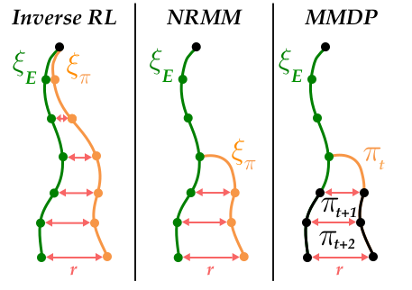
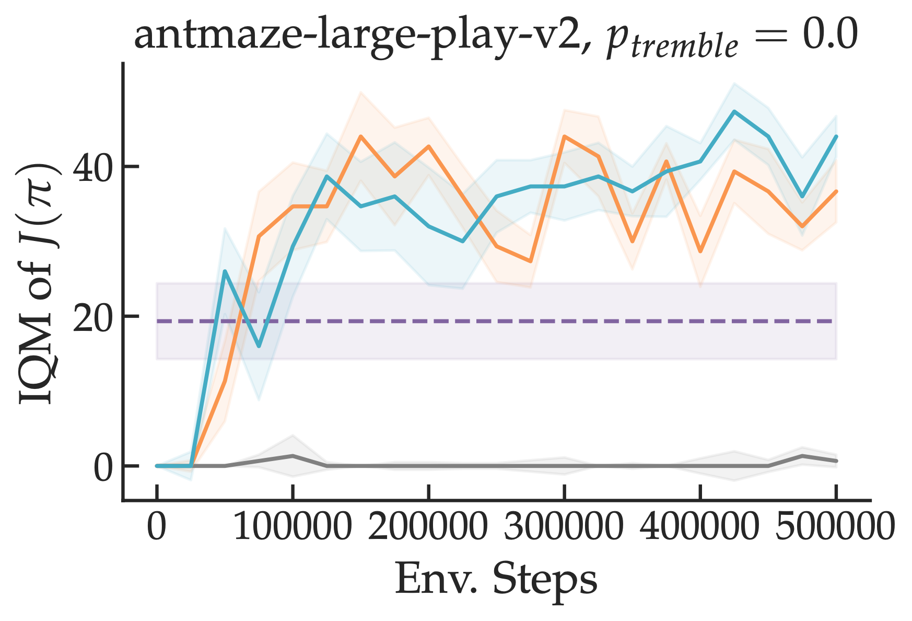

Robust Imitation via Learning to Search


TODO
Abstract
The fundamental limitation of the behavioral cloning (BC) approach to imitation learning is that it only teaches an agent what the expert did at states the expert visited. This means that when a BC agent makes a mistake which takes them out of the support of the demonstrations, they often don't know how to recover from it. In this sense, BC is akin to giving the agent the fish -- giving them dense supervision across a narrow set of states -- rather than teaching them to fish: to be able to reason independently about achieving the expert's outcome even when faced with unseen situations at test-time. In response, we explore learning to search (L2S) from expert demonstrations, i.e. learning the components required to, at test time, plan to match expert outcomes, even after making a mistake. These include (1) a world model and (2) a reward model. We carefully ablate the set of algorithmic and design decisions required to combine these and other components for stable and sample/interaction-efficient learning of recovery behavior without additional human corrections. Across a dozen visual manipulation tasks from three benchmarks, our approach $\texttt{SAILOR}$ consistently out-performs state-of-the-art Diffusion Policies trained via BC on the same data. Furthermore, scaling up the amount of demonstrations used for BC by 5-10$\times$ still leaves a performance gap. We find that $\texttt{SAILOR}$ can identify nuanced failures and is robust to reward hacking.
Video
Key Insights
1. Inverse RL is Slow Because of RL
Usually in inverse RL, an adversary picks a reward function that maximally distinguishes learner and expert samples in an outer loop and the learner optimizes this reward function in the inner loop via reinforcement learning. While inverse RL comes with strong guaratees w.r.t. compounding errors, each inner loop iteration requires solving a problem that could take a number of interactions with the environment that is exponential in the task horizon. For example, if the learner is operating in a tree structured MDP and the adversary picks a reward function that is 0 everywhere except for one of the leaf nodes, the learner needs to explore the entire tree in every inner loop iteration.
2. Expert Resets Can Speed Up RL
The reduction of imitation learning to repeated reinforcement learning is ignoring a key piece of information: given our goal is to imitate the expert, the learner should only have to compete against policies with similar visitation distributions to that of the expert. A simple way to implement this insight is to change the learner's start-state distribution to be the expert's visitation distribution during reinforcement learning. This makes it so that the learner wastes fewer environment interactions exploring parts of the state space that the expert never visits. We prove that doing so allows us to derive the first polynomial time algorithms for inverse RL, an exponential speedup. We call them MMDP (moment-matching by dynamic programming) and NRMM (no-regret moment matching).
3. Interpolated Practical Procedure
However, in the worst case, performing expert resets can introduce compounding errors (though in far fewer circumstances than a completely offline approach like behavioral cloning). To hedge against this possibility, we propose interpolating (either over the course of training or within a single policy optimization step) between standard inverse RL and one of our algorithms. Interpolation allows the learner to quickly settle on a roughly correct policy and the fine-tune it via RL. We call these interpolated approaches FILTER (fast inverted loop training via expert resets).
In practice, we observe a remarkable speedup on problems on which exploration is hard (e.g. mazes) -- compare our approaches in teal/orange to standard inverse RL in grey.

We also see moderate speedups on tasks like locomotion. Importantly, this strategy can be combined with any off-the-shelf IRL approach for faster learning. We release all of our code at the link below.
Paper

A Smooth Sea Never Made a Skilled $\texttt{SAILOR}$: Robust Imitation via Learning to Search
Arnav Kumar Jain*, Vibhakar Mohta*, Subin Kim, Atiksh Bhardwaj, Juntao Ren, Yunhai Feng, Sanjiban Choudhury, and Gokul Swamy
@misc{jain2025smoothseaskilledtextttsailor,
title = {A Smooth Sea Never Made a Skilled $\texttt{SAILOR}$: Robust Imitation via Learning to Search},
author = {Arnav Kumar Jain and Vibhakar Mohta and Subin Kim and Atiksh Bhardwaj and Juntao Ren and Yunhai Feng and Sanjiban Choudhury and Gokul Swamy},
year = {2025},
eprint={2506.05294},
archivePrefix={arXiv},
primaryClass={cs.LG},
url={https://arxiv.org/abs/2506.05294},
}Acknowledgements
This template was originally made by Phillip Isola and Richard Zhang for a colorful ECCV project, and adapted to be mobile responsive by Jason Zhang. The code we built on can be found here.